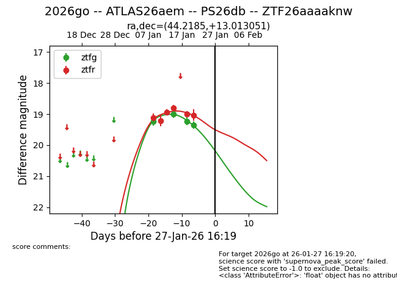
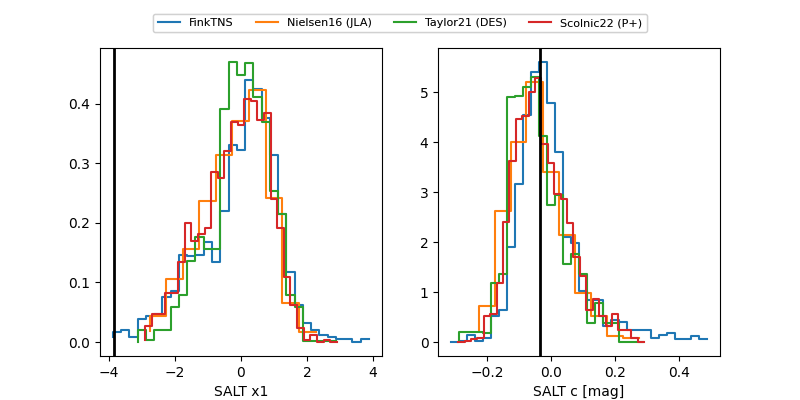

2026go
Target 2026go at 2026-01-18 06:50
Aliases and brokers:
FINK: link
Lasair: link
ALeRCE: link
TNS: link
YSE: link
alt names
ZTF26aaaaknw (ztf,fink_ztf)
2026go (tns,yse)
ATLAS26aem (atlas)
PS26db (panstarrs)
Coordinates:
equatorial (ra, dec) = 44.2185,+13.01305
equatorial (HMS+DMS) = 02:56:52.43,+13:00:46.99
galactic (l, b) = (164.1027,-39.62717)
Flags:
Photometry:
last ztfg=19.01, ztfr=18.81
2 ztfg, 4 ztfr detections
Lightcurve

Visibility


Additional plots
